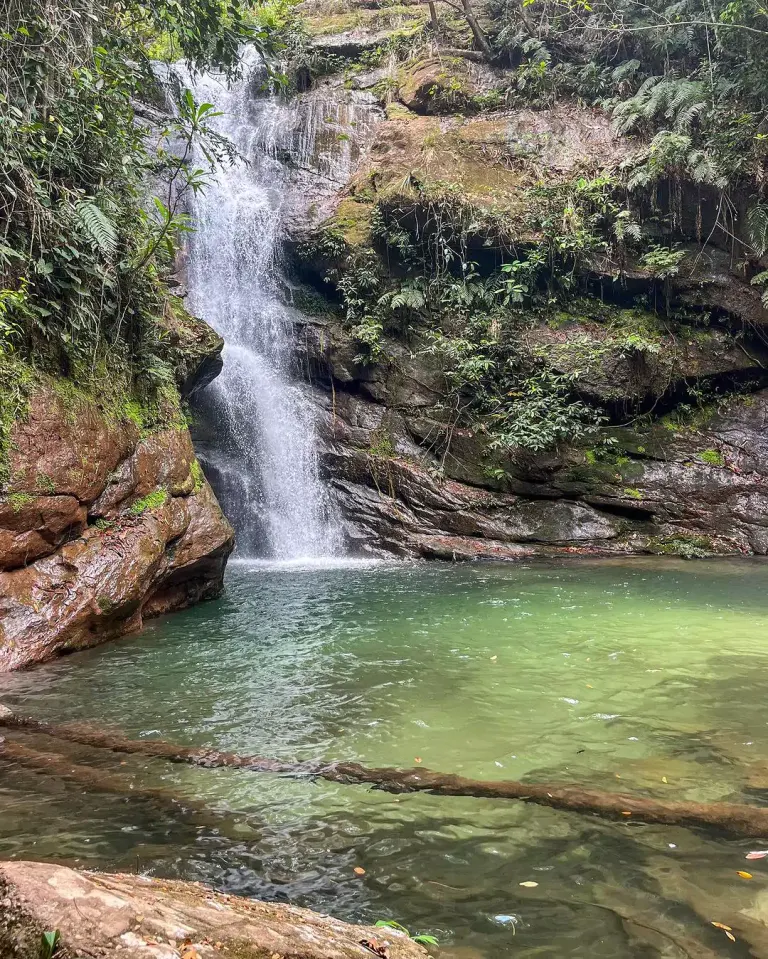

Conheça o lugar

A Estância Favo de Mel configura-se como um dos complexos de lazer e hotelaria rural mais charmosos e acolhedores das proximidades de Barra do Garças, unindo o conforto moderno à simplicidade do campo. Idealizada para receber famílias, casais e grupos de amigos, a estância destaca-se como um refúgio perfeito para quem deseja vivenciar a autêntica rotina do interior mato-grossense sem abrir mão de serviços de alta qualidade. Ocupando uma vasta área verde, a propriedade foi planejada para integrar harmoniosamente suas estruturas de hospedagem e lazer com a paisagem natural do Cerrado, preservando árvores nativas e cursos d’água. A sensação de bem-estar é imediata ao cruzar os portões da estância, onde o aroma de terra molhada e o cantar dos galos substituem o barulho do tráfego urbano. A infraestrutura de lazer da Estância Favo de Mel é robusta e diversificada, contando com piscinas de águas límpidas, toboáguas para a diversão das crianças e áreas de solário para relaxamento. Os hóspedes podem passar o dia alternando entre mergulhos refrescantes e momentos de leitura sob as sombras de generosos quiosques de palha espalhados pelo gramado. A gastronomia é, sem dúvida, um dos pilares de maior sucesso do local, oferecendo aos visitantes o melhor da culinária típica da região Centro-Oeste, preparada no tradicional fogão a lenha. Os pratos, que utilizam ingredientes frescos colhidos na própria estância ou adquiridos de pequenos produtores locais, trazem sabores marcantes que remetem à comida afetiva de fazenda.
Para os amantes de atividades ao ar livre, a Favo de Mel oferece opções que vão desde cavalgadas guiadas por trilhas internas até pescarias recreativas em lagos bem cuidados e povoados por espécies nativas. Essas atividades permitem uma interação direta com os animais da fazenda, sendo uma experiência educativa e inesquecível, especialmente para as crianças criadas em grandes centros urbanos. As acomodações da estância foram projetadas com uma arquitetura rústica, porém equipadas com comodidades contemporâneas, como ar-condicionado, camas confortáveis e varandas privativas com redes para descanso. Despertar com a luz suave do sol invadindo o quarto e o som da brisa balançando as árvores é um privilégio padrão para quem escolhe se hospedar no local. O turismo de eventos também encontra na Estância Favo de Mel um espaço ideal, com estruturas preparadas para sediar desde casamentos rústicos e aniversários até convenções corporativas de imersão. A combinação de paisagens fotogênicas com um serviço de buffet personalizado garante o sucesso de celebrações que buscam um toque de exclusividade e conexão com a natureza.
A preocupação com a sustentabilidade é visível nas práticas diárias da estância, que adota sistemas de reciclagem de resíduos sólidos, compostagem de matéria orgânica e uso consciente dos recursos hídricos. Essas ações não apenas reduzem o impacto ambiental do empreendimento, mas também servem de exemplo inspirador para os turistas que frequentam o espaço. ADurante as noites na estância, a ausência de poluição luminosa severa permite a contemplação de um céu estrelado incrivelmente nítido, muitas vezes acompanhado por rodas de viola ao redor de fogueiras. Esse ambiente nostálgico e acolhedor fomenta a socialização entre os hóspedes, que compartilham histórias e experiências sob o luar de Mato Grosso. AOs funcionários da Favo de Mel são frequentemente elogiados pela hospitalidade calorosa, característica marcante do povo da região, fazendo com que cada visitante se sinta verdadeiramente em casa. O atendimento personalizado busca entender as preferências de cada hóspede, sugerindo os melhores horários para atividades e passeios pela região de Barra do Garças. AA estância atua também como uma base estratégica de apoio para turistas que desejam explorar outras atrações da cidade, como as cachoeiras da serra ou o místico Rio Araguaia, retornando ao fim do dia. Essa conveniência de localização alia a aventura dos passeios externos ao conforto e segurança de um pouso tranquilo no fechamento do circuito diário. AEm suma, a Estância Favo de Mel transcende o conceito de simples hospedagem, consolidando-se como uma experiência completa de reconexão com as raízes rurais e com o ritmo desacelerado da natureza. É o destino obrigatório para quem busca restabelecer energias, saborear a boa comida e construir memórias afetivas duradouras em um dos cenários mais acolhedores de Mato Grosso.
As condições de acesso, funcionamento, valores e regras podem mudar. Confirme as informações com responsáveis ou órgãos locais antes de realizar o passeio.